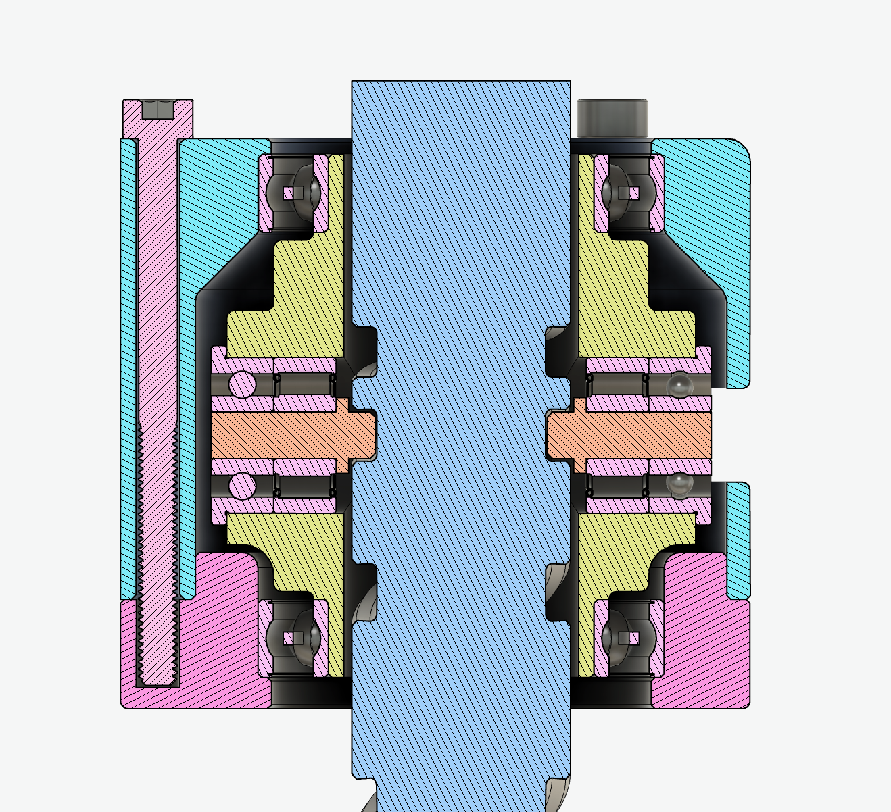
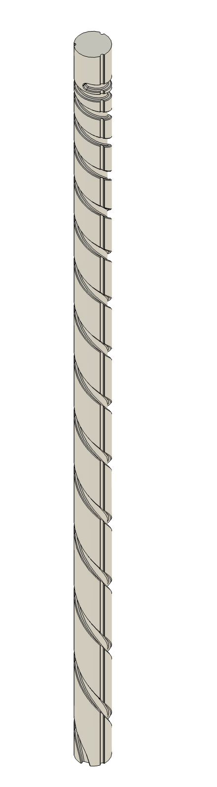
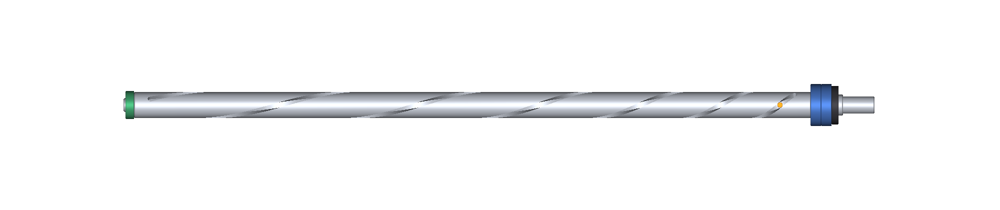
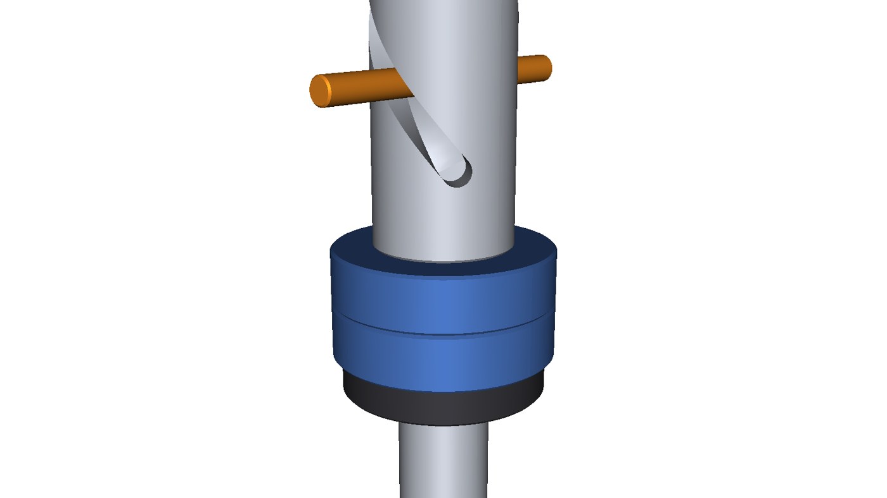
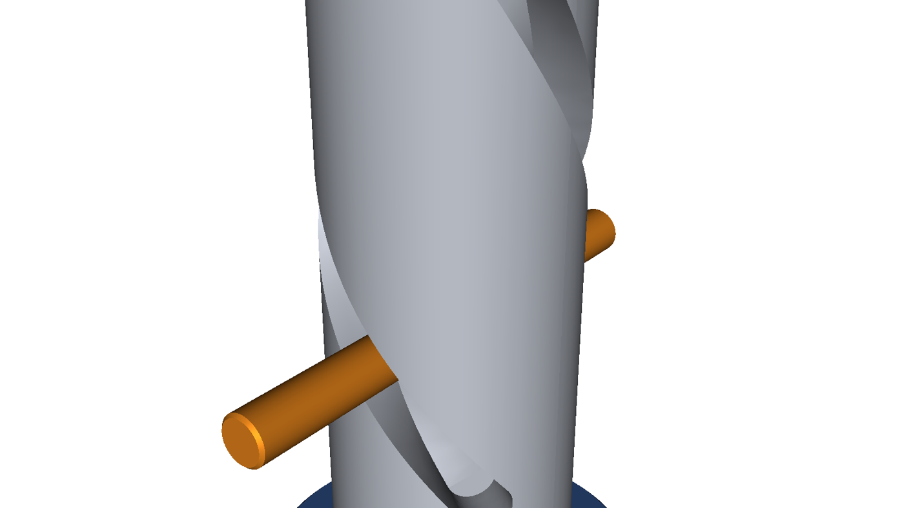
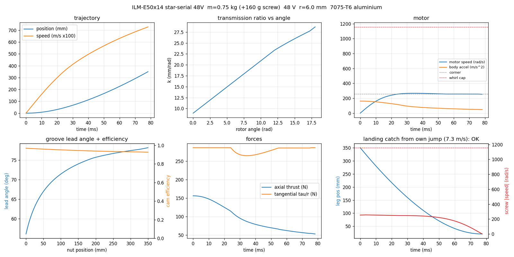

I am building a hopping robot. The short version is that it has one leg, a very energetic motor, and several ways to make a bad decision at high speed.
The longer version starts with Ben Katz's Hopper series. In particular, the posts on variable transmission dynamics, the varying-pitch screw mechanism, and the transmission-ratio optimization put a very appealing idea in my head: use the shape of a mechanism, rather than a gearbox with a fixed ratio, to decide how motor energy reaches the ground.
That is the thread I am pulling on here. This is not a replica of that robot; it is my attempt to turn the same basic idea into a buildable leg, a controllable body, and eventually a machine that can hop repeatedly instead of merely making one spectacular launch.
A fixed transmission makes a familiar trade: gear down far enough to get a large force at the start of the stroke, and the motor runs out of speed near takeoff. Gear it for speed, and it cannot push the robot hard enough from a crouch. A hopper needs both ends of that trade in a few tenths of a second.
The proposed answer is a cylindrical cam: a hollow screw with a spiral groove whose pitch changes along its length. The nut is held against rotation and has rolling cam followers in the groove. When the screw turns, the nut—and therefore the leg—moves linearly. The local pitch sets the transmission ratio: k(θ) = dx/dθ.
Near the bottom of the stroke, the groove has a small value of k. That gives a large mechanical reduction and plenty of thrust while the motor is still accelerating. Near takeoff, the groove opens up: the leg travels farther per motor radian, and the rotor can give its stored momentum back to the body instead of carrying it away.
It is a mechanical transmission schedule. There is no electronic gearshift to synchronize; the groove itself is the program.
The present leg study uses a 350 mm stroke and a hollow 7075 aluminium screw. The screw is not just a convenient shape—it is part of the moving and spinning system—so its mass, rotor inertia, cam friction, rail drag, and bending critical speed all make it into the model.
The current actuator candidate is a CubeMars RI50 rewound to KV220, driven by a Barrett Puck at 60 V. The modelled robot mass excluding the screw is 750 g; the screw adds about 143 g. One aggressive candidate reaches 10.7 m/s takeoff velocity in a 61 ms push, corresponding to a 5.8 m idealized ballistic apex. Those numbers are useful for sizing parts and exposing failure modes, not a promise of what the finished robot will do.
In fact, the first pass makes the uncomfortable parts very obvious. The cam follower loads are large, the screw must stay below its whirl speed, and the calculated contact stress in the aluminium groove is higher than I am willing to accept for a durable mechanism. The next revision needs larger or better-supported followers and a tougher groove surface—hard anodizing or a steel contact surface are both on the table. Landing is equally important: the drive and transmission need enough authority to regenerate the robot's kinetic energy before the leg reaches its hard stop.
That is the attraction of doing the optimization early. It does not make the mechanism easy; it tells me exactly which problems deserve the machining time.
A leg can make vertical impulse, but it does not automatically put the foot in the right place for the next hop. During flight, the body has to aim its leg. During stance, the robot has to get rid of any angular momentum it accumulated while doing that.
The current control model uses a large inertial tail for pitch and reaction wheels for roll and yaw. The tail turns the body fore and aft to aim the foot; the two additional wheels handle lateral lean and heading. The important trick is to despin the wheels while the foot is on the ground. With a contact point to push against, the robot can dump wheel momentum into the floor and start the next flight with control authority available again.

I have been using a MuJoCo model to work through the interaction between the leg, the reaction wheels, contact timing, and foot placement before asking the hardware to teach the same lessons more expensively. The model includes the variable-ratio screw as a constrained mechanism rather than pretending it is a fixed gear. It is still a model: compliance, backlash, real contacts, and noisy sensors will get a vote later.
The control computer is a Teensy 4.1 on a purpose-built carrier board. It has a central IMU, separate CAN buses for the screw and reaction-wheel drives, a foot-contact input, and connectors for a downward-looking flow/range sensor. The board is deliberately organized around timing and failure handling: a missed control-loop deadline disarms the system, an open arm switch is safe, and the safety checks run before motion control.

The flight controller is being developed in simulation first, then ported to C++ for the Teensy; its tuned constants are generated from the simulation model. There is a replay test that runs a recorded simulation episode through both implementations and compares their outputs, so changing a gain or the cam profile does not quietly create a second, slightly different controller in firmware. That is a small bit of discipline I expect to pay for itself as soon as there are spinning parts.
Right now this is a design-and-controls project with hardware moving into the foreground. The immediate work is intentionally unglamorous:
There is a long way between a promising transmission plot and a robot that can leave the floor, land, and choose to do it again. But that is exactly the point of this project. A hopper compresses mechanism design, motor physics, state estimation, and control into a very compact problem—and gives immediate feedback when any one of them is wrong.
More to come once there is a real screw, a real leg, and hopefully fewer reasons to stand behind a safety shield.
Since this post the design has moved on. The leg motor is now a TQ ILM-E50x14 frameless motor with the star-serial winding at 48 V, driven by a Barrett P4-37-20A Puck, the same kind of drive as on my haptic wrist. The screw has two grooves instead of one, 180° apart, and each carries a 3 mm dowel pin as its follower.


The screw is turned from 7075-T6 bar, 429 mm long and 181 g. Over the 350 mm stroke the groove makes 2.87 turns, and its lead opens from 56 mm per turn at the bottom of the stroke to about 179 mm per turn at takeoff. The motor end runs in a preloaded back-to-back pair of 71901 angular-contact bearings, clamped with an M12×1 locknut, and the far end floats in a 688 bearing.



The screw is generated by a script rather than drawn by hand. The groove flanks are the exact surface a 3 mm end mill leaves as it follows the groove’s centreline, so a 3 mm pin clears both flanks by 0.0075 mm per side along the whole stroke. Building it this way turned up a bug in my earlier STEP export: its groove drifted up to 0.445 mm off the centreline in the middle of the stroke, enough for the pin to bind. The centreline data for machining was always right; only the solid model was off.

With this motor the model predicts a 7.3 m/s takeoff from a 78 ms push, with up to 156 N of thrust on the leg. The motor peaks at 267 rad/s, 14% of the screw’s first whirl speed. It can also catch its own landing from that jump and stop with 21 mm of stroke to spare. Those are lower numbers than the RI50 candidate above, but this is the current design.